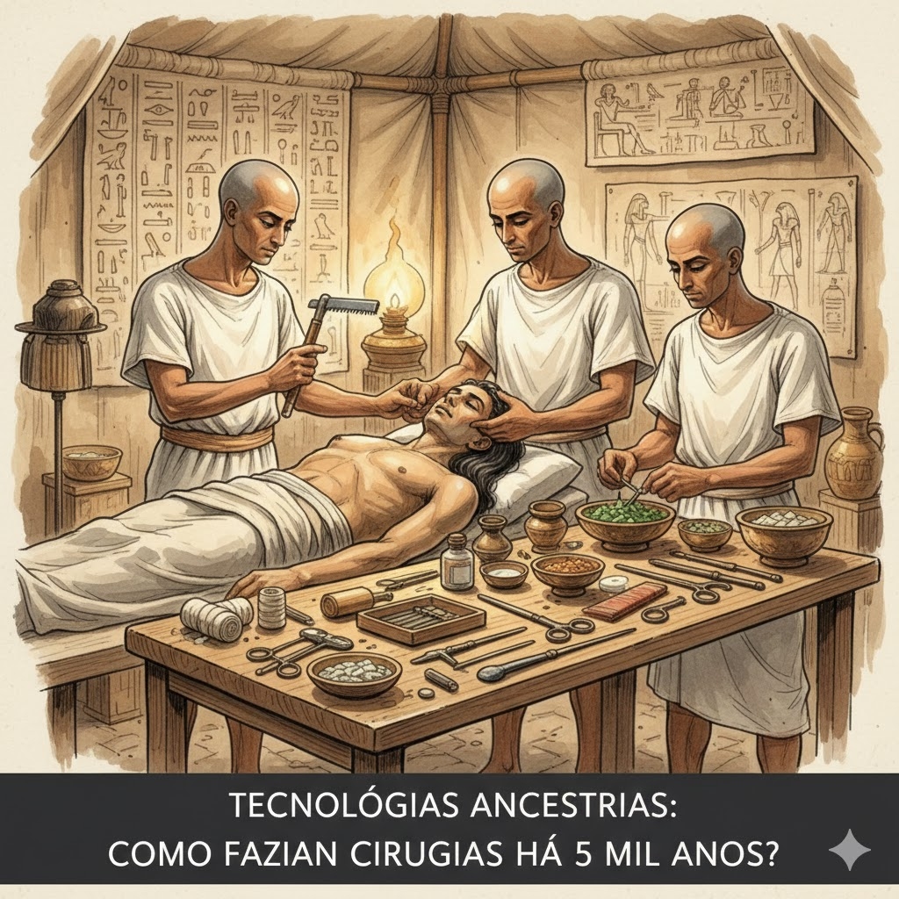

Destaque do Mês: A Primeira "Live" foi com Fogo?
Imagine o primeiro humano que conseguiu dominar o fogo... ele com certeza foi o influencer mais popular da caverna.
Ler post completo
Olá! Eu sou o Edner Paulo. Sou um explorador de ideias que adora entender como as coisas surgiram. Este blog é meu diário de bordo para compartilhar o "de onde, quando e como" das tecnologias que moldaram o mundo.
A origem do fogo e da roda. Quando a humanidade decidiu que cansaço e frio eram opcionais.

Vapor e eletricidade. O momento em que o mundo começou a correr de verdade.

IA, Internet e Smartphones. O futuro que já chegou (e que às vezes trava).




Imagine o primeiro humano que conseguiu dominar o fogo... ele com certeza foi o influencer mais popular da caverna.
Ler post completo